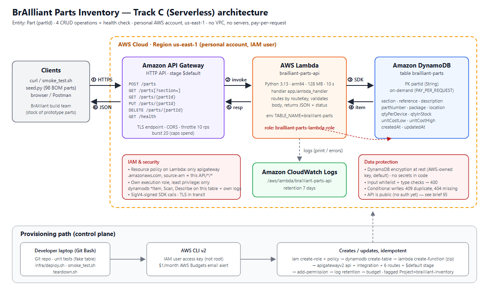

Inventory of components for BrAIlliant, a low-cost multiline refreshable braille display with AI
that I am developing for the SOLIDWORKS AAKRUTI Global / IDC 2026 competition. One prototype needs
98 bill-of-materials (BOM) lines across nine sections (carrier board, display PCB, actuators,
modules, mechanical parts and so on). The team currently keeps them in a spreadsheet, so nobody knows
what is in stock, where it is stored, or what is still missing before a build.
The service gives the team one shared HTTP API to record, look up, update and remove parts:
how many each device needs, how many are in stock, where they are stored, and the estimated unit cost.
The real BOM (Rev. F) is exported to data/parts_seed.json and loaded through the API.
Track C: Amazon API Gateway (HTTP API) + AWS Lambda + Amazon DynamoDB.
partId.us-east-1, with no VPC, NAT gateway or other
hourly-billed network parts. The same scripts also run unchanged on Learner Lab (they detect it and use LabRole).Project tag on every resource, and a teardown.sh script.Part (table brailliant-parts)| Attribute | Type | Rule | Example |
|---|---|---|---|
partId | String (PK) | Unique. Given by the client or generated as P-xxxxxxxx | BOM-005 |
description | String | Required, not empty | BQ25895RTWR charger |
qtyInStock | Integer | Required, ≥ 0 | 3 |
qtyPerDevice | Integer | Optional, ≥ 0 | 1 |
section, reference | String | Optional. section is the list filter | Carrier board, U2 |
partNumber, package, location | String | Optional | BQ25895RTWR, WQFN-24, Drawer A1 |
unitCostLow, unitCostHigh | Number (USD) | Optional, ≥ 0 | 1.06, 2.23 |
createdAt, updatedAt | ISO-8601 string | Set by the server | 2026-11-24T05:30:00+00:00 |
https://{api-id}.execute-api.us-east-1.amazonaws.com)| Op | Method & path | Request | Success | Errors |
|---|---|---|---|---|
| Create | POST /parts | JSON Part (description, qtyInStock required) | 201 + item | 400 invalid, 409 duplicate id |
| Read | GET /parts, GET /parts?section=…GET /parts/{partId} | — | 200 {count, items}200 + item | 404 not found |
| Update | PUT /parts/{partId} | JSON with any fields to change | 200 + updated item | 400 invalid, 404 |
| Delete | DELETE /parts/{partId} | — | 200 {deleted} | 404 |
| Health | GET /health | — | 200 table status | 500 if the table can't be reached |
Unknown fields, wrong types and negative numbers are rejected with 400. Create, update and delete use DynamoDB conditional writes, so a duplicate id returns 409 and a missing id returns 404 without a separate read.

apigateway.amazonaws.com with
source-arn = arn:aws:execute-api:…:{api-id}/*/* invoke the function.brailliant-parts-lambda-role can be assumed only by Lambda in this account.
Its inline policy allows only dynamodb:PutItem, GetItem, UpdateItem, DeleteItem, Scan, DescribeTable
on this table's ARN, plus writing to its own log group.src/app.py (handler), tests/ (6 unit tests on a fake table, no AWS needed),
infra/deploy.sh (idempotent AWS CLI provisioning), smoke_test.sh, seed.py,
teardown.sh, and docs/./health and a full CRUD smoke test.teardown.sh after grading.